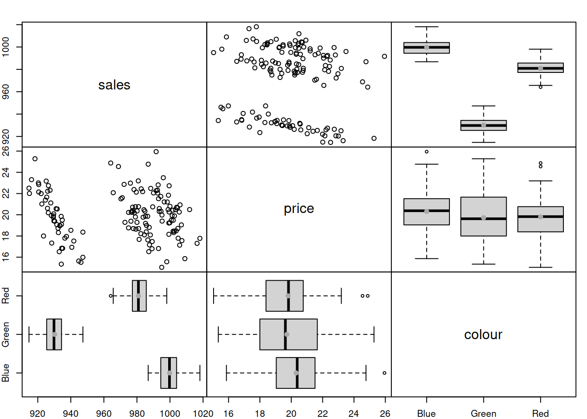

13.1 An example in R
We consider a simple example, when we want to estimate the model \(y_t = \mu_y + \epsilon_t\) (global average), assuming that the error term follows normal distribution: \(\epsilon_t \sim \mathcal{N}(0, \sigma^2)\), which means that \(y_t \sim \mathcal{N}(\mu_{y}, \sigma^2)\). In this case we want to estimate two parameters using likelihood: \(\hat{\mu}_y\) and \(\hat{\sigma}^2\). First, we generate the random variable in R and plot its distribution:
y <- rnorm(1000, 100, 10)
hist(y, xlim=c(50,150), main="", probability=TRUE)
As expected, the distribution of this variable (1000 observations) has the bell shape of Normal distribution. In order to estimate the parameters, for the distribution, we will try them one by one and see how the likelihood and the shape of the fitted curve to this histogram change. We start with \(\hat{\mu}_y=80\) and \(\hat{\sigma}=10\) just to see how the probability density function of normal distribution fits the data:
hist(y, xlim=c(50,150), main="", probability=TRUE)
lines(c(50:150),dnorm(c(50:150),80,10),col="red",lwd=2)
abline(v=80,col="red",lwd=2)Figure 13.1: ML example with Normal curve and \(\hat{\mu}_y=80\) and \(\hat{\sigma}=10\)
and we get the following log-likelihood value (we will discuss how this formula can be obtained later):
sum(dnorm(y,80,10,log=T))## [1] -5748.114In order for the normal distribution on 13.1 to fit the data well, we need to shift the estimate of \(\mu_y\) to the right, thus increasing the value to, let’s say, \(\hat{\mu}_y=90\):
hist(y, xlim=c(50,150), main="", probability=TRUE)
lines(c(50:150),dnorm(c(50:150),90,10),col="orange",lwd=2)
abline(v=90,col="orange",lwd=2)Figure 13.2: ML example with Normal curve and \(\hat{\mu}_y=90\) and \(\hat{\sigma}=10\)
Now, in Figure 13.2, the normal curve is much closer to the data, but it is still a bit off. The log-likelihood value in this case is -4231.38, which is higher than the previous one, indicating that we are moving towards the maximum of the likelihood function. Moving it further, setting \(\hat{\mu}_y=100\), we get:
hist(y, xlim=c(50,150), main="", probability=TRUE)
lines(c(50:150),dnorm(c(50:150),100,10),col="green3",lwd=2)
abline(v=100,col="green3",lwd=2)Figure 13.3: ML example with Normal curve and \(\hat{\mu}_y=100\) and \(\hat{\sigma}=10\)
Figure 13.2 demonstrates a much better fit than in the previous cases with the log-likelihood of -3714.645, which is even higher than in the previous case. We are almost there. In fact, in order to maximise this likelihood, we just need to calculate the sample mean of the variable (this is the MLE of the location parameter in normal distribution) and insert it in the function to obtain:
hist(y, xlim=c(50,150), main="", probability=TRUE)
lines(c(50:150),dnorm(c(50:150),mean(y),10),col="darkgreen",lwd=2)
abline(v=mean(y),col="darkgreen",lwd=2)Figure 13.4: ML example with Normal curve and \(\hat{\mu}_y=\bar{y}\) and \(\hat{\sigma}=10\)
So the value of \(\hat{\mu}_y=\bar{y}=\) 100.167 (where \(\bar{y}\) is the sample mean) maximises the likelihood function, resulting in log-likelihood of -3714.505.
In a similar fashion we can get the MLE of the scale parameter \(\sigma^2\) of the model. In this case, we will be changing the height of the distribution. Here is an example with \(\hat{\mu}_y=\) 100.167 and \(\hat{\sigma}=15\):
hist(y, xlim=c(50,150), main="", probability=TRUE)
lines(c(50:150),dnorm(c(50:150),mean(y),15),col="royalblue",lwd=2)
abline(v=mean(y),col="royalblue",lwd=2)Figure 13.5: ML example with Normal curve and \(\hat{\mu}_y=\bar{y}\) and \(\hat{\sigma}=15\)
Figure 13.5 demonstrates that the curve is located lower than needed, which implies that the scale parameter \(\hat{\sigma}\) is too high. The log-likelihood value in this case is -3846.091. In order to get a better fit of the curve to the data, we need to reduce the \(\hat{\sigma}\). Here how the situation would look for the case of \(\hat{\sigma}=10\):
hist(y, xlim=c(50,150), main="", probability=TRUE)
lines(c(50:150),dnorm(c(50:150),mean(y),10),col="darkblue",lwd=2)
abline(v=mean(y),col="darkblue",lwd=2)Figure 13.6: ML example with Normal curve and \(\hat{\mu}_y=\bar{y}\) and \(\hat{\sigma}=10\)
The fit on Figure 13.6 is better than on Figure 13.5, which is also reflected in the log-likelihood value being equal to -3714.505 instead of -3846.091. The best fit and the maximum of the likelihood is obtained, when the scale parameter is estimated using the formula \(\hat{\sigma}^2 = \frac{1}{T}\sum_{t=1}^T\left(y_t - \bar{y}\right)^2\), resulting in log-likelihood of -3714.455. Note that if we use the unbiased estimate of the variance \(\hat{s}^2 = \frac{1}{T-1}\sum_{t=1}^T\left(y_t - \bar{y}\right)^2\), the log-likelihood will not reach the maximum and will be equal to -3714.455. In our special case the difference between the two is infinitesimal, because of the large sample (1000 observations), but it will be more substantial on small samples. Still, the two likelihood values are diffrent, which can be checked in R via the following commands:
# The maximum log-likelihood with the biased variance
logLik01 <- sum(dnorm(y,mean(y),sqrt(mean((y-mean(y))^2)),log=TRUE))
# The log-likelihood value with the unbiased variance
logLik02 <- sum(dnorm(y,mean(y),sd(y),log=TRUE))
# The difference between the two
logLik01 - logLik02All of this is great, but so far we have discussed a very special case, when the data follows normal distribution and we fit the respective model. But what if the model is wrong (no kidding!)? In that case the idea stays the same: we need to find the parameters of the normal distribution, that would guarantee the best possible fit to the non-normal data. Here is an example with MLE of parameters of Normal distribution for the data following Log Normal one:
y <- rlnorm(1000, log(80), 0.4)
hist(y, main="", probability=T, xlim=c(0,300))
lines(c(0:300),dnorm(c(0:300),mean(y),sd(y)),col="blue",lwd=2)Figure 13.7: ML example with Normal curve on Log Normal data
Figure 13.7 shows that the Normal model does not fit the Log Normal data properly, but this is the best we can get, given our assumptions. The log-likelihood in this case is -5007.92. The much better model would be the Log Normal one:
hist(y, main="", probability=T, xlim=c(0,300))
lines(c(0:300),dlnorm(c(0:300),mean(log(y)),sd(log(y))),col="red",lwd=2)Figure 13.8: ML example with Log Normal curve on Log Normal data
The model in Figure 13.8 has the log likelihood of -4901.159. This indicates that the Log Normal model is more appropriate for the data and gives us an idea that it is possible to compare different distributions via the likelihood, finding the better fit to the data. This idea is explored further in the next section.
As a final word, when it comes to more complicated models with more parameters and dynamic structure, the specific curves and data become more complicated, but the logic of the likelihood approach stays the same.